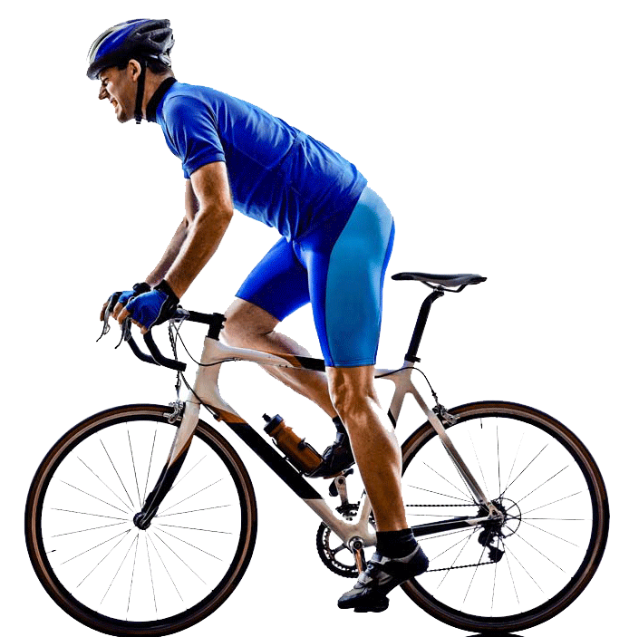
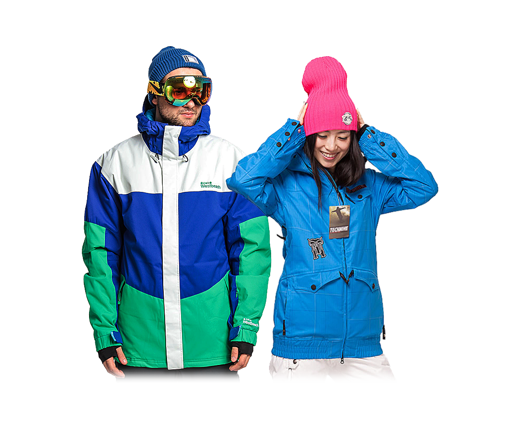
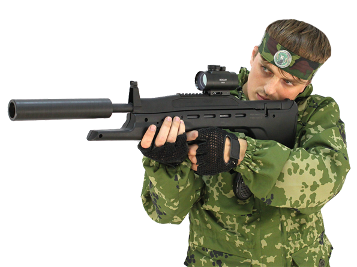

Всё для велопрогулок

Выберите район:
Если Вы собрались покататься на велосипеде, то одного велосипеда парой недостаточно. Чтобы прогулка была одновременно и комфортной, и безопасной, необходимо заранее позаботиться о нескольких деталях: специальной одежде, средствах защиты как
для себя, так и для вашего железного коня. Элементы защиты (шлем, очки, перчатки) очень важны для велосипедиста. Очки для езды на велосипеде должны выполнять ряд условий: они должны защищать от ультрафиолетовых лучей, быть легкими и достаточно
ударопрочными. Перчатки предотвращают соскальзывание рук с руля. Для защиты еще необходимо надеть налокотники и наколенники. Так же с собой необходимо взять насос, фонарик (для езды в темное время суток), звонок и бутылку воды. Теперь
можно отправляться в путешествие.
Всё для зимних видов спорта

Выберите район:
С наступлением зимы настало время выбрать лыжи или сноуборд и отправиться на ближайший склон! Чтобы правильно выбрать сноуборд, необходимо знать основные критерии выбора. Начинающим спортсменам лучше всего подходит минимальная жесткость сноуборда.
С «мягкой» доской легче учиться, она будет более плавно вести себя на трассе и прощать множество ошибок. К сноуборду подбираем крепления. Главная задача креплений – надежно зафиксировать ноги райдера на доске. Чем надежнее фиксация, тем
лучше управляемость и меньше риск получить травму. Крепления подбирают под ботинки, но не наоборот. Не нравится сноуборд? Попробуем подобрать лыжи. Когда вы пришли в магазин, подбирайте горные лыжи по росту за минусом 20 сантиметров от
вашего роста. Вопрос, как подобрать лыжные палки, Вас вообще не должен сильно беспокоить. Также необходимо подобрать одежду для катания на лыжах и сноуборде. Зимняя теплая куртка, штаны, термобелье, маска на лицо от ветра. Начинающим необходимо
надеть шлем. У качественной одежды для катания гарантированно будут мембранное покрытие, спасающее от влаги, и вентиляционные вырезы, пропускающие воздух внутрь; на куртке – мягкая подкладка внутри, защищающая подбородок и запястья от
натирания, и внутренняя «юбка» на заклепках, предохраняющая от попадания снега при падении; на штанах – заклепки или липучки, позволяющие зафиксировать штаны на талии без ремня или пояса, и закрывающиеся на молнию карманы.
Всё для игры в пейнтбол

Выберите район:
Надоело кататься? Хочется побегать на своих ногах? Берем друзей и идем играть в пейнтбол. И если площадку найти можно в любом лесу, то с экипировкой придется помучаться. Обязательно надо подобрать хорошую защитную маску на лицо. Это основной
элемент, отсутствие которого в пейнтболе недопустимо. Основная функция – не допустить попадания краски из разорвавшегося пейнтбольного шара в глаза, и максимально предотвратить возможные травмы лица. Теперь перейдем к нашему оружию. Чтобы
собрать пушку, надо подобрать маркер (это и есть пейнтбольное оружие, стреляющее специальными шарами с краской. Самым простым в обслуживании и надежным является механический маркер. Он идеально подходит для начального уровня игры в пейнтбол.
Для игры в пейнтбол нам нужны пейнтбольные шары. Они универсальные: круглые шарики с краской внутри, разрывающиеся при попадании в противника или в другое препятствие на их пути. Тут главное не качество, а количество. Кому хочется большего
разнообразия в боеприпасах, покупает гранаты с краской, дымовые шашки. Одежда для достаточно проста. Обычный камуфляжный костюм поверх своей одежды – лучшая одежда для игрока. Его не жалко измазать краской, и он летом хорошо пропускает
воздух, зимой обеспечивает защиту от холода. По желанию к камуфляжу надеваем защитный жилет, налокотники, наколенники, перчатки и бежим воевать.